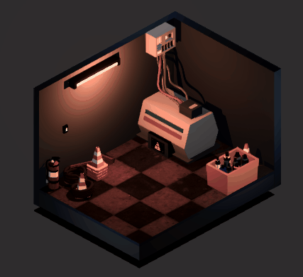
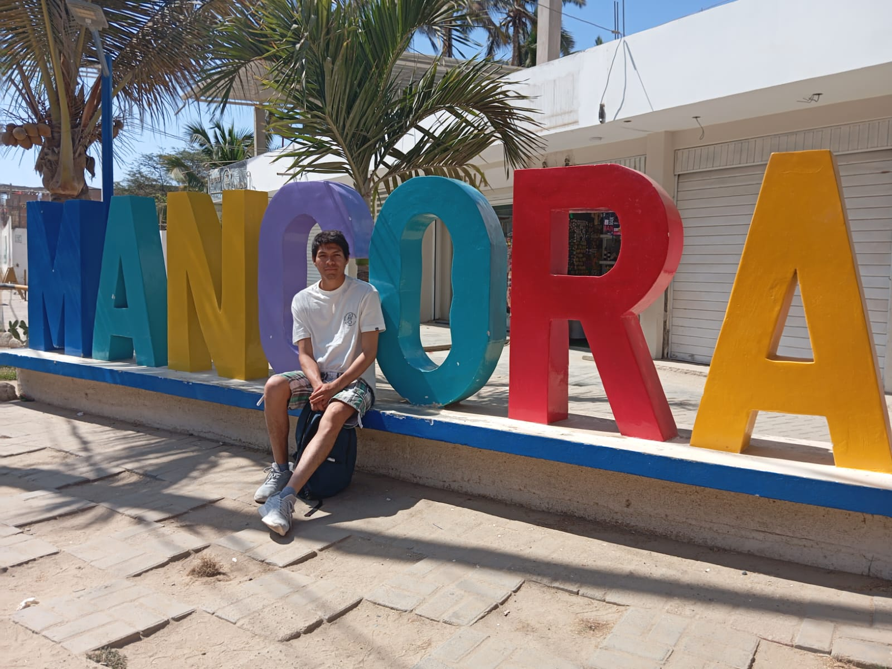
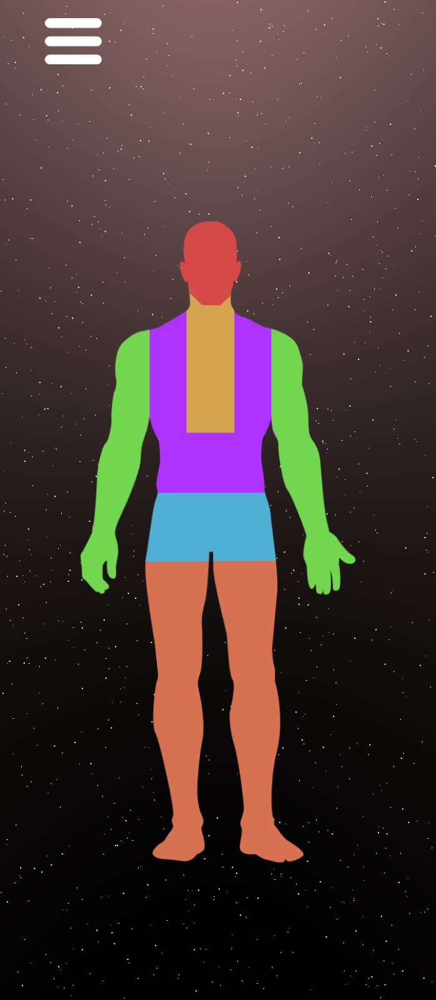
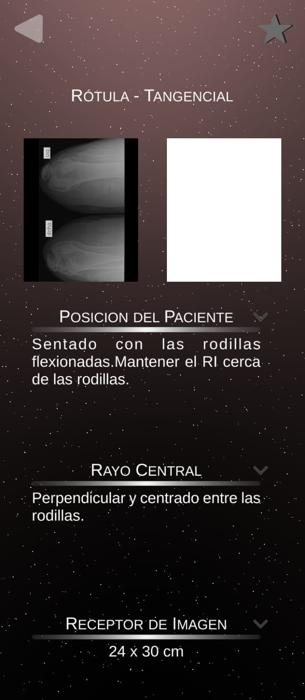
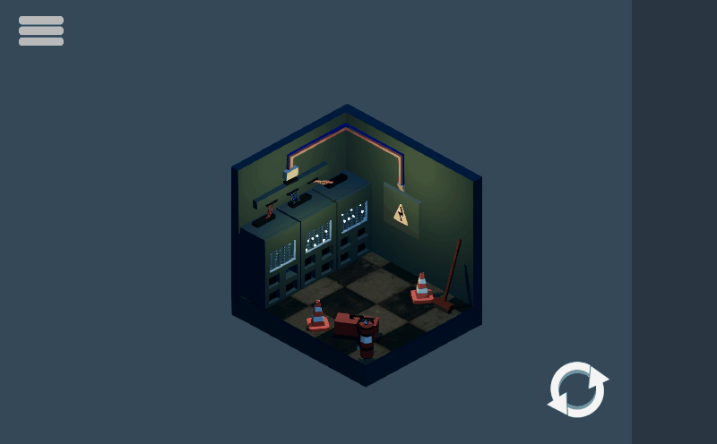
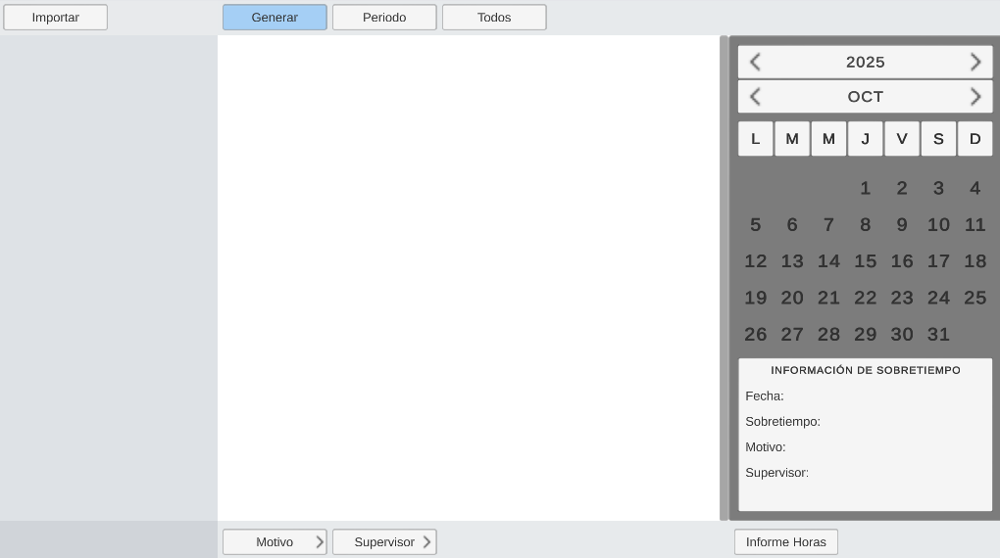
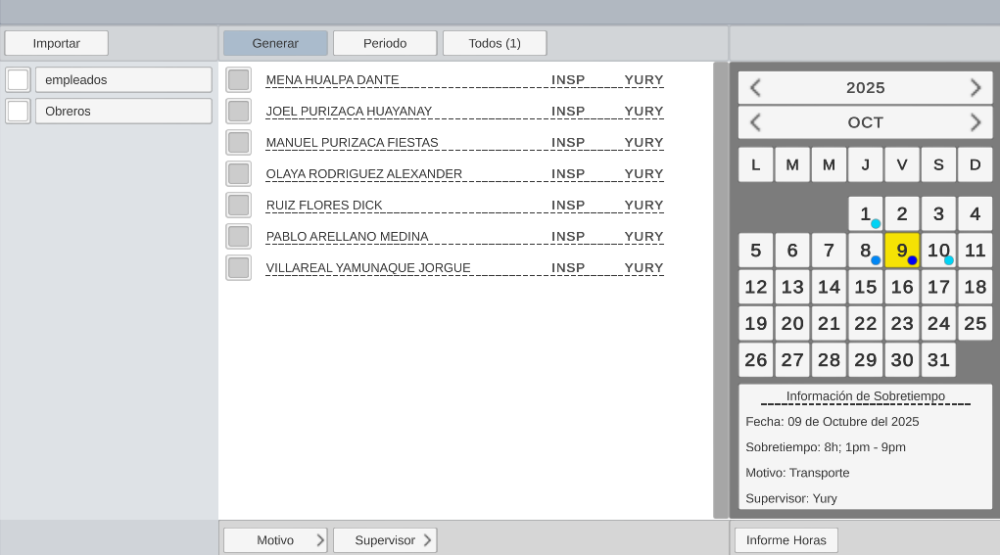
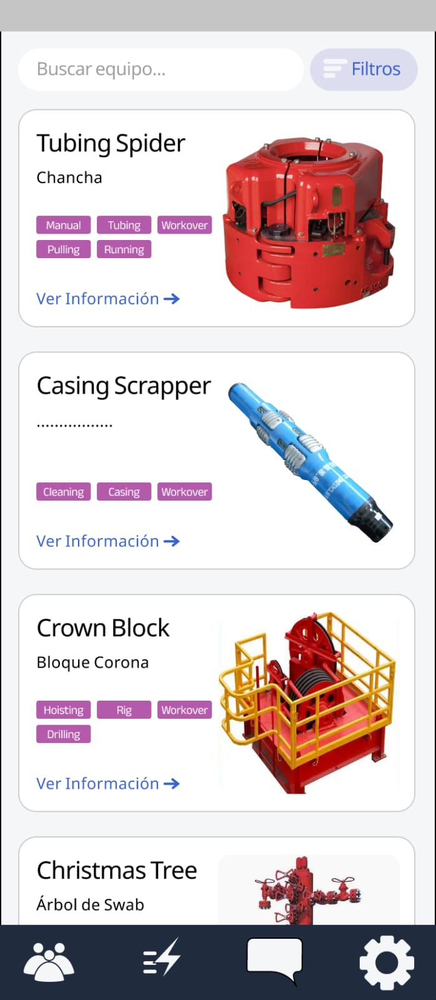
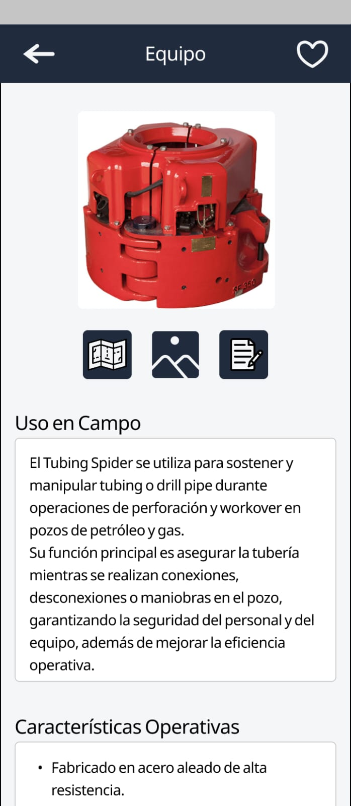

SOBRE MI
Hola, mi nombre es Eduardo Lamatta. Soy físico y me apasiona la programación. Empecé a aprender por mi cuenta desde que estaba en la universidad y, a lo largo de estos años, he desarrollado varios programas para computadora, así como aplicaciones móviles.
Además, me encantan los videojuegos; de hecho, gracias a ellos nació mi interés por la programación. Con el tiempo también he aprendido a utilizar diferentes herramientas de software como Blender, Unity e Inkscape, y lenguajes de programación como Kotlin, SQL y C#. También tengo experiencia, en menor medida, con Python y VBA.

PROYECTOS
Rx Projex
C#
Aplicación que funciona como una herramienta de consulta para verificar y revisar la información necesaria al realizar radiografías en diferentes partes del cuerpo, tales como:
- La distancia a la fuente
- La posición del paciente
- El tamaño del receptor de imagen
- La ubicación del rayo central
La ubicación del rayo central Además, la aplicación proporciona imágenes de referencia y permite experimentar con los valores de Kv y mA para observar cómo afectan la imagen radiográfica. Además ofrece la posibilidad de guardar configuraciones personalizadas para su uso posterior.


The Apus: Escape Room
C#
Videojuego ambientación de misterio, en el que el jugador debe explorar diferentes escenarios, interactuar con objetos y resolver acertijos para avanzar en la historia a través de mecánicas point and click y usando una vista isométrica para facilitar la exploración e interacción con el escenario para resolver los desafíos.
El diseño del juego se centra en puzzles basados en observación y lógica, donde el jugador debe descifrar códigos, descubrir objetos y conectar pistas dentro del entorno.


Overtime System
C#
Herramienta desarrollada para automatizar la generación de formatos de registro de horas extras utilizados en procesos administrativos.
- Registrar la información del personal
- Organizar los datos de manera estructurada
- Generar documentos listos para su uso
Además, facilita la gestión de la información al reducir el trabajo manual, mejorando la eficiencia, minimizando errores y optimizando tareas administrativas.


Drilling Core
Kotlin
Aplicación que funciona como una herramienta de consulta para verificar y revisar información relacionada con equipos utilizados en operaciones de drilling, workover e intervención de pozos.
- La identificación del equipo
- Su función dentro de las operaciones
- Sus componentes principales
- El área de aplicación en campo
- Métodos de inspección
Además, la aplicación proporciona imágenes de referencia que facilitan el reconocimiento de los equipos, además de permitir consultar información técnica relevante y guardar configuraciones o registros/notas personalizados para su uso posterior.


CONTACTO
No dudes en enviarme un mensaje en cualquier momento.
También puedes visitar mis redes sociales para seguir el avance de mis proyectos.